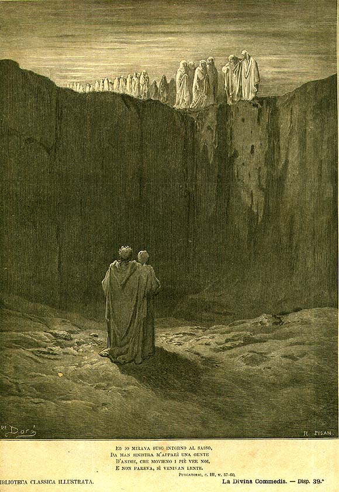

Песнь 3 из 33
Отлучённые. Манфред

Кратко
У подножия Данте замечает, что Вергилий не отбрасывает тени, и тот объясняет природу призрачных тел. Навстречу медленно движется толпа умерших, отлучённых от Церкви, но раскаявшихся перед смертью. Среди них — Манфред, король Сицилии, павший в битве. Он показывает свои раны и рассказывает, что покаялся в последний миг и потому спасён: милость Божия безмерна. Но за непокорность Церкви такие души ждут у подножия в тридцать раз дольше срока своего отлучения — если только молитвы живых не сократят его.
Главные моменты
- Вергилий без тени — повод объяснить устройство «воздушных» тел теней.
- Манфред показывает смертельные раны — и спокойно говорит о спасении.
- Главная мысль: раскаяние в последний миг спасает даже отлучённого.
- Молитвы живых способны сократить срок ожидания умерших.
Значение
Гимн безмерному милосердию: ни отлучение, ни тяжкие грехи не отменяют силы покаяния.